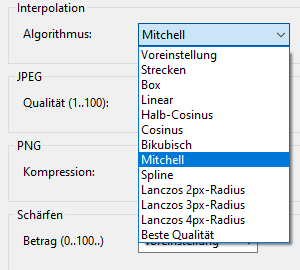
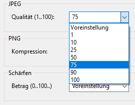
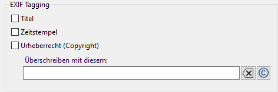
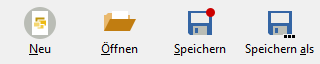

Übersicht
ImageResize 4.0 ist eine App zur Größenänderung von JPEG- und PNG-Bildern (auch Skalierung oder Resampling genannt). Sie kann viele Bilder verarbeiten und daraus Präsentationen (Web-Gallerien) erzeugen.
Inhalt
ÜbersichtQuelldateien
Zielgrößen
Zielordner
Umbenennen und Mischen
Wasserzeichen
Qualität
Taggen
Präsentation
Öffnen und Speichern
Einstellungen
Kommandozeilen-Parameter
Wasserzeichen-Editor
Fähigkeiten
- Skalieren von JPEG- und PNG-Bildern
- Parallelverarbeitung vieler Bildern
- Skalieren jedes Bildes in mehrere Größen
- Vergrößern und verkleinern
- Erzeugen verschiedener Präsentationen (für den Web-Browser)
- Auswahl der Interpolation für gute Ergebnisse
- Optionales Wasserzeichen
- EXIF Tags (Titel, Timestamp, Copyright)
- GUI-, CLI- und API-Schnittstelle
- Kontrollierte Dateiumbenennung
- Zufälliges Mischen der Bilder
- Speichern der Einstellungen in Projektdateien
Was es nicht kann
- Ausschnitte, Bildverzerrung und andere Transformationen
- Formatkonvertierung (JPEG bleibt JPEG und PNG bleibt PNG)
- Alle EXIF tags übertragen
Übersicht
Das Programm benötigt mindestens die folgenden 3 Angaben:
- Die Liste von Bilddateien oder einen Quellordner mit Dateifilter

- Eine oder mehrere Zielgrößen

- Den Zielordner

Drücken Sie am Ende  um das Resampling zu starten.
um das Resampling zu starten.
Quelldateien
ImageResize kann viele Bilddateien resampeln. Die Liste der Bilder besteht aus Pfad/Dateiname und kann
- manuell bearbeitet werden
- im Auswahldialog ausgewählt werden
 mit <STRG> und <UMSCHALT>
mit <STRG> und <UMSCHALT> - durch Ziehen von Bilddateien aus dem Windows-Explorer ergänzt werden
- durch Angabe eines Quellordners mit Dateifilter angegeben werden
- relative Pfadangaben beinhalten
Die Liste darf JPEG- und PNG-Dateien enthalten. Die Dateinamen können beibehalten oder umbenannt werden. Relative Pfade beziehen sich auf den Speicherort der Projektdatei (.irs) oder auf das letzte aktuelle Verzeichnis.
Inhalt Größen
Größen
Eine Größe in Pixeln bezieht sich auf die längere Seite des Bildes.
ImageResize kann mehrere Größen für jedes Bild erzeugen. Geben Sie eine Liste von Größen ein,
die mit dem Komma getrennt sind, oder wählen Sie Größen aus den Vorschlägen aus.
Sie können alle Größen angeben, die größer als 0 sind.
Sie können die Liste ändern, indem Sie die Löschen-Schaltfläche  klicken. Um eine einzelne Größe zu löschen, markieren Sie zuvor die Größe, oder sie klicken einen
bereits gewählten Vorschlag erneut.
klicken. Um eine einzelne Größe zu löschen, markieren Sie zuvor die Größe, oder sie klicken einen
bereits gewählten Vorschlag erneut.
Zielordner
Ein Zielordner muss angegeben werden. Sie können ihn direkt eintippen
oder mit der Schaltfläche  auswählen.
auswählen.
Um Konflikte der Zielnamen zu vermeiden, wenn mehrere Zielgrößen angegeben werden, können Sie entweder mit Umbenennen verschiedene Dateinamen erzeugen, oder indem jede Größe einen eigenen Zielordner enthält. Dazu muss der Name des Zielordners den Platzhalter %SIZE% enthalten.
Inhalt Umbenennen und Mischen
Umbenennen und Mischen
Umbenennen der Zieldateien wird interessant, wenn Sie nicht für jede Größe einen eigenen Ordner, sondern alle Dateien in einem gemeinsamen Ordner erzeugen möchten. Dann müssen die Zieldateien umbenannt werden, am besten, indem sie die Zielgröße zur Unterscheidung enthalten.
Klicken Sie Anwenden und wählen Sie eine der möglichen Strategien:
Strategie "Einfach"
Die einfache Dateinamenvorlage erzeugt Namen wie diesen: img085.jpg. Die Datei-Nummerierung beginnt bei 1 und enthält nicht die Größe (in Pixeln). Dann ist es erforderlich für jede Größe einen eigenes Verzeichnis zu erzeugen. Dazu fügen Sie in die Vorlage des Zielordners den Platzhalter %SIZE% ein.
Die Dateinamen-Vorlage ist im einfachsten Falle img%INDEX:1,3%.%FILEEXT%. Der INDEX ist die 0-basierte laufende Nummer der Quelldatei in der Liste. Die Zahlen 1 und 3 hinter dem Schlüsselwort INDEX bedeuten, dass der Index bei 1 beginnt und 3 Ziffern mit führenden Nullen enthalten wird.
Strategie "Erweitert"
Die Dateinamen-Vorlage in diesem Falle ist z.B. img%INDEX:1,3%_%SIZE%.%FILEEXT%, um alle Dateien ohne Namenskonflikt im selben Verzeichnis zu erzeugen. Sie erzeugt einen Dateinamen wie img085_1920.jpg. Der Dateinamenskonflikt wird vermieden durch Verwendung des %SIZE%-Platzhalters.
Strategie "Angepasst"
Um das Programm einen geeigneten Dateinamen erzeugen zu lassen, können Sie hier eine eigene Vorlage angeben. Die Vorlage enthält Platzhalter für spezielle Werte, die wärend der Verarbeitung erzeugt und eingefügt werden.
Beispiele für gültige Vorlagen im Falle, wo die resultierenden Dateinamen für verschiedene Größen im gemeinsamen Verzeichnis keinen Konflikt erzeugen, könnten so aussehen:
img%INDEX:1,3%_%SIZE%.%FILEEXT%
ergibt z.B. img012_1920.jpg
%FILENAME%_%SIZE%.%FILEEXT%
ergibt.z.B. DSC3240_1920.jpg
Verfügbare Platzhalter
| %FILENAME% | Dies ist der originale Dateiname, ohne die Erweiterung. |
| %FILEEXT% | Die Erweiterung des Originalnamens ohne den Punkt. Sie können das Format der Zieldatei nicht ändern, indem Sie die Erweiterung ändern. Dies könnte Bildbetrachter verwirren. |
| %INDEX:N,D% |
Der 0-basierte Index (laufende Nummer) der Datei in der Liste. N ist ein Offset (Versatz). Normalerweise beginnen Listen mit der Nummer 1, aber durch Angabe eines Versatzes können Sie vorhandene Listen erweitern. D ist die Zahl der Stellen der resultierenden Zahl, die ggf. führende Nullen erhält. Dadurch wird die korrekte lexikalische Ordnung der Dateinamen ermöglicht. |
| %SIZE% | Die Zielgröße in Pixeln der aktuellen Datei. |
| %INTERPOLATION% | Der Name der aktuell gewählten Interpolation. |
Mischen
Mischen bedeutet, dass die lexikalische Reihenfolge der Zieldateinamen zufällig ist. Dazu ist die automatische Umbenennung der Zieldateien nötig.
ImageResize mischt zunächst die Reihenfolge der Bilder bevor es die resampelten Bilder erzeugt. Das hat nur Sinn, wenn dabei die Zieldateinamen den Index des Bildes am Beginn des variablen Teiles des Namens enthält, damit die lexikalische Reihenfolge aufsteigend ist. Eine geeignete Vorlage für den Zielnamen ist z.B. img%INDEX:1,3%.%FILEEXT%.
Der Parameter Saat kontrolliert die zufällige Abfolge. Eine Saat von 0 ("Zufällig") wird jedesmal eine andere Abfolge erzeugen, wenn die Verarbeitung gestartet wird. Jeder andere konstante Wert wird die Abfolge in der selben Art mischen, solange die Länge der Bildliste sich nicht ändert.
Inhalt Wasserzeichen
Wasserzeichen
Ein Wasserzeichen ist ein halbdurchlässiges kleines Bild, das dem Zielbild z.B. ein Copyright zufügt. Das Bild muss im PNG-Format vorliegen und kann einen Alpha-Channel (Transparenz) haben. Wenn das Bild gedruckt wird, kann eine zusätzliche Deckkraft angegeben werden. 20 bis 30 Prozent ist gut für eine schwach sichtbare Erscheinung, ab 50 Prozent wird das Wasserbild deutlich sichtbar.
Anwenden
Wählen Sie diese Option, um das Wasserbild zu aktivieren.
Dateiname
Geben Sie einen Dateinamen einer PNG-Datei an, deren Bild in jedes Zielbild hineinskaliert wird.
Normalerweise genügt es für alle Zielgrößen eine gemeinsame Datei anzugeben, weil die Größe für jedes Bild angepasst wird. Dafür wird ein Wasserzeichenbild in guter Auflösung einmalig für alle erzeugt.
Um für jede Zielgröße ein anderes Wasserbild festlegen zu können, müssen Sie im Namen der Wasserbilddatei den Platzhalter %SIZE% angeben. ImageResize erwartet in diesem Falle ein Wasserbild für jede Größe, deren Name der Vorlage entspricht, also die Größe enthält.
Sie können Wasserbilddateien mit jedem Programm erzeugen welches das PNG-Format unterstützt, z.B:
- Inkscape - ein freier Vektorgraphik-Editor
- Gimp - ein freies Rastergraphikprogramm
- Greenfish Icon Editor - ein graphischer Rasterbild-Editor
- mit dem eingebauten Wasserzeichen-Editor
Sie können dabei Transparenz verwenden, aber beachten Sie, dass ImageResize zusätzlich eine Deckkraft darüberlegen kann.
Deckkraft
Eine Deckkraft von 0 Prozent lässt das Wasserbild verschwinden, 100 Prozent macht es voll deckend.
| 10% |  |
20% |  |
| 30% |  |
40% |  |
| 50% | 60% |  | |
| 70% |  |
80% |  |
| 90% |  |
100% |  |
Horizontale Position
Die Position wird in Prozent des verfügbaren Raumes angegeben und von links oben gezählt.
0 Prozent ist linksbündig, 50 Prozent ist mittig und 100 Prozent ist rechtsbündig.
Vertikale Position
0 Prozent ist ganz oben, 50 Prozent ist vertikal zentriert, 100 Prozent ist ganz unten.
Inhalt Qualität
Qualität
Die Qualität des Ergebnisses hängt von diesen Einstellungen ab. Sie können den Kompressionsgrad für JPEG- und für PNG-Formate und den Resampling-Algorithmus (Interpolation) steuern.
Qualität
Resampling oder Skalierung bedeutet das Aufbauen eines neuen Bildes mit kleineren oder größeren Abmessungen bei gleichem Seitenverhältnis. Dazu müssen die Farben der Pixel des Zielbildes durch Interpolation ermittelt werden. Im einfachsten Falle - Stretch (ohne Interpolation) - bekommt das Pixel den Farbwert des ihm nächsten Pixels des Originales. Dies führt zu Informations- und Qualitätsverlust beim Verkleinern und zu schlechter Qualität beim Vergrößern.
Es stehen 11 Resampling-Algorithmen zur Verfügung. Ausser dem einfachen Stretch sind die Algorithmen Interpolationen. Je nach Skalierung wirken Sie sich unterschiedlich aus.
Die Voreinstellung ist "Beste Qualität". Dabei wird "Mitchell" für Herunter- und "Spline" für Heraufskalieren gewählt.
Schauen Sie sich die Wirkung verschiedener Interpolationen an.
JPEG Qualität
JPEG ist ein verlustbehaftetes Verfahren. Eine höhere Qualität resultiert in größeren Dateien. Bei JPEG ist 75 bis 95 Prozent eine gute Wahl. Noch 50% hat eine erstaunlich gute Qualität bei kleinen Dateien. Wenn Sie Web-Gallerien erzeugen, und die Größe auf die Bildschirmgröße beschränken (1920px) erhalten Sie bei 50% Qualität/Kompression optimale Ladezeiten bei akzeptabler Qualität.
PNG Qualität
Das PNG-Format komprimiert immer verlustfrei, ergibt aber bei Naturbildern eine geringe Kompression, daher ist es hauptsächlich bei künstlichen Bildern sinnvoll, wo es große einfarbige Flächen gibt. Es sind 4 Kompressionsgrade möglich:
- Voreinstellung - normale Kompression
- Keine
- Schnellste - geringe und schnellste Kompression
- Maximal - größte und langsamste Kompression
Inhalt
 Taggen
Taggen
Allgemeines
Sie können gewisse Meta-Informationen den erzeugten Bildern zufügen. Normalerweise werden solche Metainformationen bei Fotos (z.B. JPEG) im EXIF-Format innerhalb der Datei gespeichert. Die modernen Fotoapparate legen damit viele technische Informationen ab. Die wichtigsten Meta-Informationen für ImageResize sind Titel, Timestamp und Copyright.
Taggen (engl. "anhängen") bedeutet bei ImageResize, dass Sie den mit ImageResize erzeugten Bildern bestimmte dieser Informationen mitgeben. Es wird aus zwei Gründen von ImageResize unterstützt:
- Zum Erhalt Ihres Copyrights bei der Weitergabe von Bildern
- Als Grundlage für die Präsentation als private oder öffentliche Webseite
Es gibt in ImageResize folgende Strategien solche Tags weiterzugeben:
- Als EXIF-Tags innerhalb von JPEG-Bildern
- Als .imgtags-Datei, die jedem Zielverzeichnis, bzw. jeder Bildgröße automatisch beigefügt wird
Es gibt folgende Quellen für Tags:
- Die EXIF-Tags der originalen Dateien
- .tags-Dateien, die Sie den Originalbildern beifügen können
EXIF-Tags
Es werden derzeit von ImageResize leider nur bestimmte EXIF-Tags unterstützt:
-
Titel
Eine kurze Beschreibung des Bildinhaltes, so wie er von einem Anzeigeprogramm wiedergegeben würde. Der Titel ist als EXIF Tag ImageDescription abgelegt. -
Zeitstempel
Das Aufnahmedatum eines Fotos. -
Copyright
Das Copyright-Tag besteht mindestens aus den Teilen Copyright-Zeichen © od. (c), dem Jahr und dem Urheber. Z.B. "© 2024 Mogli Maisenkeyser, www.atomek.de". Hängen Sie eine Webdomäne dran, um keinen Zweifel zu lassen.
Im Einstellungen-Dialog Taggen können Sie auswählen, welche der genannten Tags in die Zielbilder übernommen werden sollen. Dabei können die Copyright-Einträge für alle Bilder mit einer neuen Zeichenkette überschrieben werden.
Vorbereitung zum Taggen ihrer Bilder
Um die erzeugten Kopien zu taggen gibt es 2 Möglichkeiten:
1. Die Originaldateien mit EXIF-Metainformationen erweitern
Das geht nur bei JPEG-, nicht aber bei PNG-Bildern. Sie können dazu
- im Eigenschaften-Dialog des Windows-Explorers im Reiter "Details" die Tags Titel, Erfassungsdatum und Copyright in ändern.
- ein Programm wie ExifTool oder RawTherapee verwenden.
2. Vorbereiten der Tags in .tags-Dateien
Mit einem beliebigem einfachen Textbearbeitungsprogramm, wie dem Windows-Editor (notepad.exe), schreiben Sie eine Liste der Tags und speichern die Datei UTF-8-kodiert im Verzeichnis mit den Originaldateien unter dem Namen ".tags". Wenn Sie mehrere Verzeichnisse mit Bildern haben, legen Sie in jedes Verzeichnis eine .tags-Datei.
Eine .tags-Datei ist eine UTF-8 codierte CSV-Datei (kommaseparierte Liste). Die Titelzeile enthält die Namen der Spalten (Filename, Title, Timestamp, Copyright). Darunter existiert für jedes Bild eine Zeile mit den Feldern entsprechend der Header-Zeile.
Filename, Title, Copyright DSC04262.jpg, Labore Sanitas, (c) 2023 ATOMEK DSC04264.jpg, Leuchtturm am Hafen, (c) 2023 ATOMEK DSC04288.jpg, "Heimfahrt durchs Watt, herrlich", (c) 2023 ATOMEK
Die erste Spalte muss "Filename" heißen und enthält den Namen der Datei ohne den Pfad. Die Reihenfolge der anderen Spalten und die Reihenfolge der Zeilen sind unbedeutend. Sie können auch eigene Felder einführen, die in der Präsentation verwendet werden. Wenn ein Feld Kommata oder führende Leerzeichen enthalten soll, setzen Sie den Wert in doppelte Anführungszeichen. Die letzten Felder eine Zeile können fehlen - es müssen keine Kommata mit leeren Werten folgen. Der Asterisk * steht für einen Wert, der von der vorherigen Zeile übernommen werden soll.
Wenn Sie mehrere .tags-Dateien in verschiedenen Verzeichnissen anlegen, müssen diese nicht gleich strukturiert sein. Sie können unterschiedliche Spaltennamen haben. Wiederholen sich Werte entsprechend dem Wert der vorhergehenden Zeile, geben Sie * als Wert an.
Einstellungen zum Taggen
Tags speichern
Hier bestimmen Sie, ob die gefundenen Tags in .imgtags-Dateien der Zielordner gespeichert werden sollen. Die .imgtags-Dateien sind klein im Vergleich zu den Bilddateien.
.imgtags-Dateien sind eine Voraussetzung für die Erzeugung einer Präsentation und werden voreingestellt erzeugt.
.tagsreport-Dateien sind allgemeinere CSV-Dateien für zukünftige Zwecke und eigene Programme. Sie werden von ImageResize nicht benötigt.
Tags laden
Wenn Sie Tags verarbeiten möchten, müssen Sie angeben woher diese kommen sollen. Sie können entweder aus den EXIF-Informationen der JPEGs stammen oder aus ihren .tags-Dateien oder aus beidem. Wenn sie aus beidem stammen haben die .tags-Dateien Vorrang. Ist z.B. das Copyright-Tag in den EXIF-Informationen des Fotos enthalten und außerdem existiert auch eine Copyright-Spalte in der .tags-Datei, dann wird der Wert aus der .tags-Datei genommen.
Wenn sie Tags speichern wollen aber keine Tags-Quelle angeben, wird ImageResize selbsttätig nach .tags-Dateien suchen, auch wenn Sie dies nicht ausdrücklich angegeben haben.
EXIF Tagging
Sie können hier bestimmen, ob die erzeugten Bilder EXIF-Tags erhalten sollen. Normalerweise enthalten die erzeugten Bilder keinerlei Meta-Informationen aus den Originaldateien.
EXIF Tagging
Hier wählen Sie aus, welche Tags in die erzeugten Bilder als EXIF-Tags übernommen werden sollen. Der Titel wird im EXIF-Feld "ImageDescription" abgelegt. Sie können das Copyright-Tag für alle erzeugten Bilder überschreiben.
Wenn Sie als Quelle sowohl EXIF als auch .tags-Dateien angegeben haben (Tags laden), haben die .tags-Dateien Vorrang. Die EXIF-Metainformationen der Originaldateien werden dann nur verwendet, wenn die .tags-Dateien für die betreffende Datei keine Felder definiert haben.
Inhalt Präsentation
Präsentation
Die wichtigste Neuerung der Version 4.0 ist die Einführung der Präsentation ihrer Bilder. Die Präsentation ist eine Web-Gallerie, die Sie mit ihrem Webbrowser betrachten können.
Erzeugen einer Präsentation
Angenommen Sie haben zuvor ihre Bilder auf eine geeignete Größe skaliert, wählen Sie den Dialog
Präsentationen... .
- wählen Sie eine der verfügbaren Präsentationen, z.B. "Info 1.0"
- öffnen Sie die betreffende .imgtags-Datei mit den Meta-Informationen
- geben Sie bei den Einstellungen den Titel der Gallerie und die anderen Angaben ein
- Klicken Sie Erzeugen

- Schauen Sie sich die erzeugte Präsentation mit
 an
an
Wenn Sie mehrfach "Anzeigen" klicken, wird ihr Browser möglicherweise jedesmal ein neues Tab öffnen. Sie können statt dessen die aktuell im Browser angezeigte Präsentation im ihrem Browser aktualisieren.
InhaltÖffnen und Speichern von Projektdateien
Sie können die aktuellen Einstellungen als Projekt mit der Erweiterung .irs speichern. Das sind einfache textbasierte INI-Dateien.
Beim Öffnen einer Projektdatei wird das aktuelle Verzeichnis auf das Verzeichnis der Projektdatei gesetzt. Dadurch können Sie Pfadangaben relativ angeben und das Projekt mit den Bildern verschiebbar machen.
Sie können einstellen, wie weit Sie ImageResize auf zu speichernde Einstellungen hinweist. Im bequemsten Falle speichert ImageResize stets automatisch die aktuellen Einstellungen.
Sie können dieses Verhalten im Dialog Einstellungen ändern.
InhaltKommandozeilen-Parameter
Diese beziehen sich auf die graphische Anwendung ImageResize.exe. Es gibt auch das Kommandozeilenprogramm imgres.exe mit wesentlich mehr Optionen.
filename.irs
Sie können ImageResize eine .irs-Datei beim Start laden lassen, indem Sie den Dateinamen als Kommandozeilen-Parameter übergeben. Dadurch kann die Anwendung ImageResize auch in der Systemsteuerung mit der Erweiterung .irs verknüpft werden.
-A oder -AUTOSTART
Lässt ImageResize die Ausführen-Schaltfläche automatisch beim Start betätigen.
-X oder -AUTOEXIT
Bewirkt ein automatisches Schließen der Anwendung nach dem Ende der Verarbeitung.
-L EN oder -LANGUAGE EN
Die Anwendung ist für die englische Sprache entwickelt, aber es gibt eine deutsche Lokalisierung, die automatisch auf deutschen Systemen angezeigt wird. Mit dem Schalter kann dieses Verhalten verhindert werden.
Um ImageResize automatisch eine Liste von Bildern resampeln zu lassen, speichern Sie zunächst eine geeignete .irs-Datei und starten dann das Programm mit diesen Kommandozeilenparametern:
C:\Programme\ImageResize\ImageResize.exe C:\mylist.irs -A -X
InhaltWasserzeichen-Editor
Mit  können Sie den eingebauten
Wasserzeichen-Editor öffnen. Dieser einfache Dialog lässt Sie einen Schriftzug mit ein paar
nützlichen Dekorationen erzeugen.
können Sie den eingebauten
Wasserzeichen-Editor öffnen. Dieser einfache Dialog lässt Sie einen Schriftzug mit ein paar
nützlichen Dekorationen erzeugen.
Die Vorschau zeigt Ihnen, wie das Wasserzeichen ungefähr aussehen wird, allerdings ohne die zusätzliche Transparenz, die sie bei den Wasserzeichen-Einstellungen angeben können.
Um einen Eindruck davon zu bekommen, wie ihr Wasserzeichen auf dunklem, bzw. hellem Hintergrund aussieht,
drücken Sie eine dieser Schaltflächen 


Mit diesen Schaltflächen können Sie die Einstellungen des Dialoges als .was-Datei speichern und später wieder laden. Es wird neben der .was-Datei das erzeugte PNG-Bild des Wasserzeichens gespeichert.
Sie können Ihre aktuellen favorisierten Einstellungen ohne einen Dateinamen als Favoriten speichern und später einfach wieder abrufen.
| Text |
Geben Sie hier die Textzeile ein, die im Wasserzeichen dargestellt werden soll. Das ©-Zeichen mit
<ALT> <0> <1> <6> <9> oder mit der
 -Schaltfläche. -Schaltfläche.
|
| Font |
Wählen Sie einen Font mit der Größe in Punkten, einen Fontnamen in Anführungszeichen und optional die Stile Italic und
Bold oder wählen Sie einen Font im Dialog  aus.
Die Qualität des Wasserzeichens hängt mit der Font-Größe zusammen. 12pt erzeugt ein grobpixeliges Wasserzeichen, 48pt eine
genauere Abbildung. Die Fontgröße hat keinen Einfluss auf die spätere Darstellung im Bild, da deren Größe bei den Wasserzeicheneinstellungen
des Hauptfensters angegeben wird. aus.
Die Qualität des Wasserzeichens hängt mit der Font-Größe zusammen. 12pt erzeugt ein grobpixeliges Wasserzeichen, 48pt eine
genauere Abbildung. Die Fontgröße hat keinen Einfluss auf die spätere Darstellung im Bild, da deren Größe bei den Wasserzeicheneinstellungen
des Hauptfensters angegeben wird.
|
| Font Farbe | Wählen Sie die Zeichenfarbe (Vordergrund) aus. |
| Umriss | Die Schrift erhält einen feinen Umriss mit der gewählten Farbe. |
| Umrissfarbe | Farbe des feinen Umrisses. |
| Schatten | Ermöglicht einen verwischten Hintergrund der Schrift, der je nach Farbe leuchtet oder wie ein Schatten wirkt. |
| Schatten Farbe | Wählen Sie die Farbe des verwischten Hintergrundes aus. |
| Verwischen | Dies bewirkt einen Glanz oder Schatten um die Schrift herum, um den Kontrast des Wasserbildes zum Hintergrund zu verbessern. Wählen Sie eine Breite des Glanzes oder Schattens in Pixeln aus. Die effektive Breite hängt auch von der Schriftgröße ab. |
| Qualität | Kontrolliert die Art der Erscheinung des Schattens. Probieren Sie die möglichen Einstellungen durch Normal, Disk, Corona, Precise, Fast und Box. Precise ist ein sehr dünner Schatten, wie ein Umriss. |
| Ok | Nachdem ein Wasserzeichen definiert wurde, muss es zunächst als PNG-Datei gespeichert werden, oder zuvor aus einer Datei geladen werden. Erst dann wird Ok verfügbar. |
| Abbrechen | Schließt den Dialog, ohne die Datei zu verwenden. |